用户旅程图 · 一条流程一条链
产品核心只有一件事：把三维场地 立起来、把三维物料 摆进去、做空间规划 。其余流程都是把它接进生意的前景与后台，所以本图分三组画：核心四条链在前，进场前三条、出场后四条只作辅助。每条链从入口画面开始：点哪个按钮、箭头导向哪个页面或功能，一路画到终点。实拍全部来自你正在使用的实例 （进行中状态：左栏「活动简报｜活动资料」页签、右栏 Agent 常驻）；暂无实拍的用虚线框（框内就是真实控件名）。虚线箭头＝提案中的跳转（F 卡）。
2026-10-30 · v4 核心 4 链 · 辅助 7 链 实拍来源：本地实例 playwright
00 怎么读
实拍画面 来自你的实例，点击可看大图 虚线框 需运行时数据才能到达的态（提案卡/核对/客户页等），控件名与代码一致虚线箭头 本批补上的跳转（F-01～F-05，已落地） 黑chip ＝触发跳转的按钮
每条链从左往右读；「分支」用上下几条泳道表示（建场地有 A 对话 / B 图纸 / C 地图三条）；链下注明回环（放弃/撤销回到哪）。同一页面的两种状态 ：空白新草稿时首屏是底部快捷生成条、左栏是「简报卡＋更多资料」折叠层；一旦有资料（填过需求/打开过深工具），左栏常驻「活动简报｜活动资料」页签——你在用的就是后者，本图按后者画。
01 核心 · 3D 场地、3D 物料与空间规划产品真正在做的事只有这一件：把一块三维场地 立起来，把三维物料 摆进去，再做空间规划 ——排座、动线、密度、改一版。下面四条链是主场景，其余都是把它接进生意的前景与后台。
S3
建场地（①） 已对齐 · F-03 落地（B 支路回对话引导） A 支路画法与实路不符，见 §04
A 对话
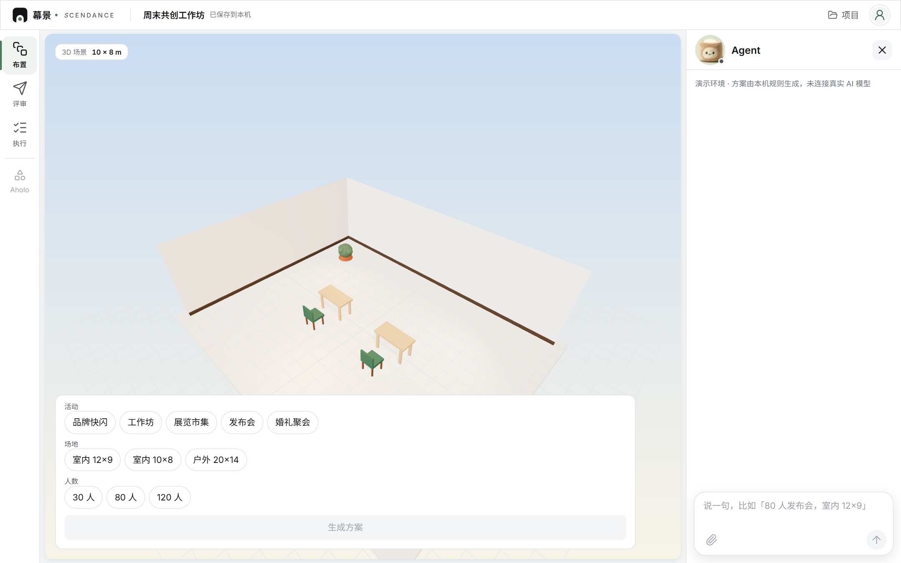
右栏 晴光对话① 「室内 12×9，层高 4」
场地预填卡（确认前不报假米数） 室内 · 12 × 9 主入口 层高 4.0
确认生成 3D
右栏 预填卡 人点改再生成 · 已有场地时不走这张卡，见 §04
B 图纸
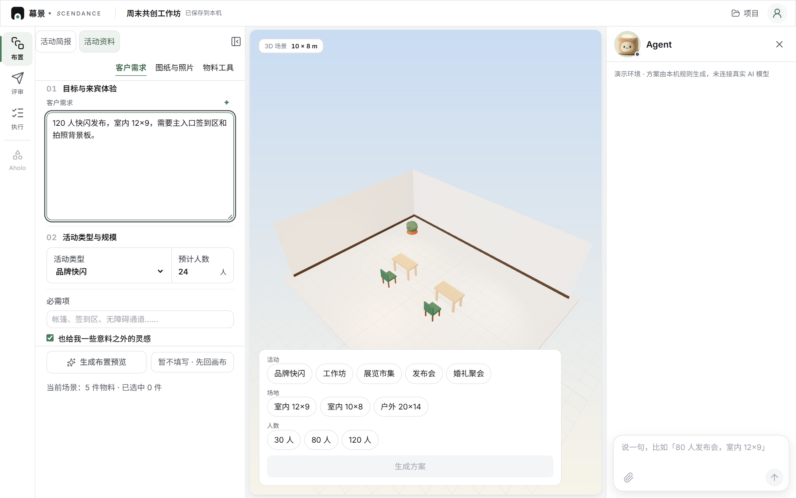
左栏 活动资料 · 客户需求 页签：客户需求｜图纸与照片｜物料工具
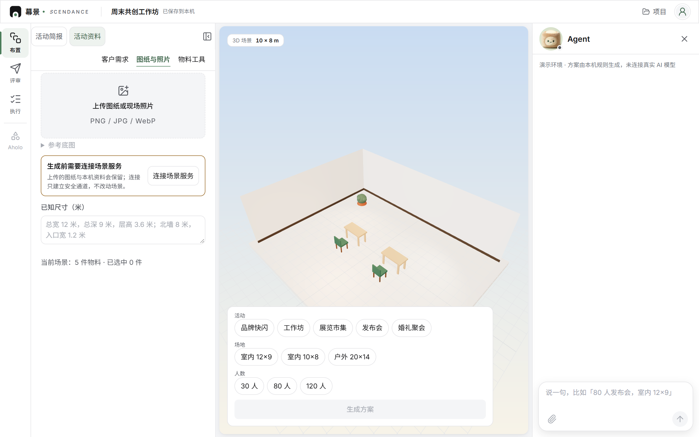
左栏 图纸与照片 上传卡 · 参考底图 · 前置卡 · 已知尺寸
识别 → 人工核对（红线：不代确认墙） 确认长度并锁定比例 核对识别结构
确认结构并继续设计
同页核对区 结构核对 比例闸→墙线→原图对应
三维候选方案 确认应用并保存 放弃候选
应用后结果区出现： 回对话继续布置
同页结果区 候选确认 应用后可撤销 · 引导回右栏对话
C 地图
左轨常驻入口（场地立没立起来都在） 布置 评审 执行 地图
左轨 地图选址 今天新增，另一会话还在改；入口名以最终为准
高德选址圈画（要先粘 Key 与安全密钥） 搜索地点 搜索
圈画场地 生成户外场地
画布浮层 圈一块地 需高德 Key 与联网，本机拍不到
户外场地立好：真实范围按外接矩形报米数 放得下的物料留着 放不下先撤 n 件
画布 户外场地 重圈走同一入口 · 进 S4 布置
F-03 已落：B 支路应用候选后，结果区出现「回对话继续布置 」，一点即回到右栏对话并把光标放进输入框。维护项「编辑当前场地 」在图纸与照片页底部（进阶块），不占主链。
S4
出布置（②） 已对齐
画布：半透明候选＋绿/蓝/橙/红差异框 方案提案 · 尚未应用
确认布置 放弃
画布+右栏 提案预览 确认前不落盘
回环：「放弃 」→ 回画布原状，可重新生成。
S6
物料与生成物件 已对齐 · 卡点在外部服务（M1 待审合）
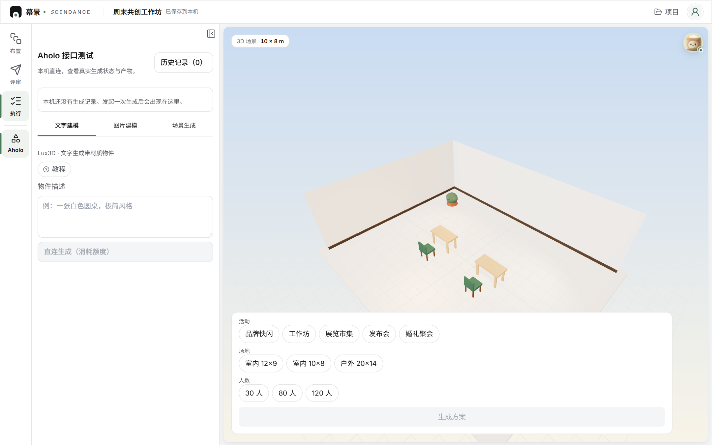
左轨 Aholo 生成物件 三步教程：用法/等待预期/额度
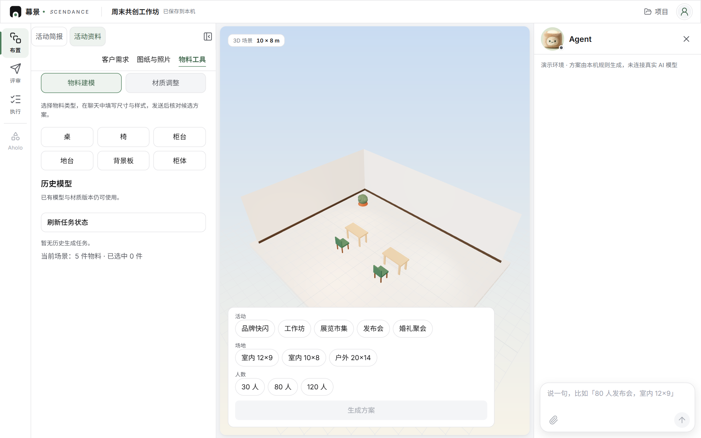
左栏 物料建模 / 材质调整 活动资料 ·「物料工具」页签 · 原版本保留
02 辅助 · 进场前核心之前的三步：进门、起个名字、说清要办什么。它们不产生空间，只给核心喂输入。
S0
开机进入 已对齐
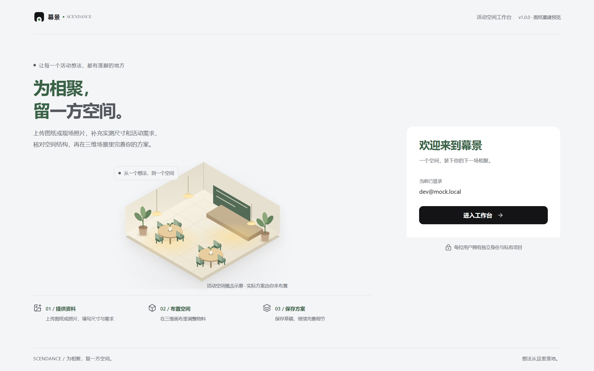
/auth/ 产品页 · 登录/注册 未登录时右卡是登录/注册表单；「进入工作台 →」
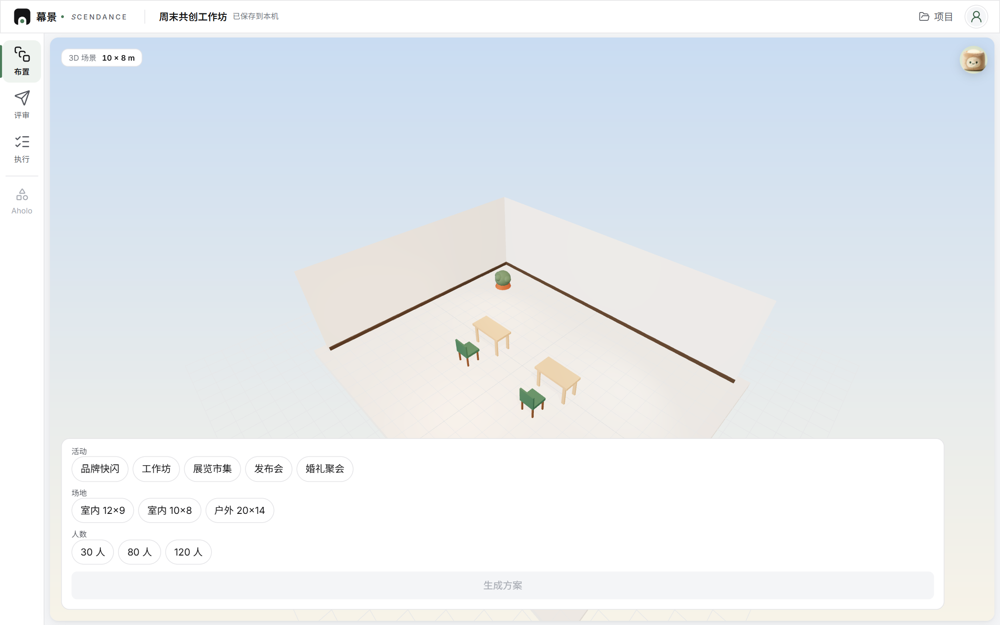
/editor/ 工作台首屏 · 本地草稿 顶栏「已保存到本机」
S1
新建活动 已对齐 · F-01 落地
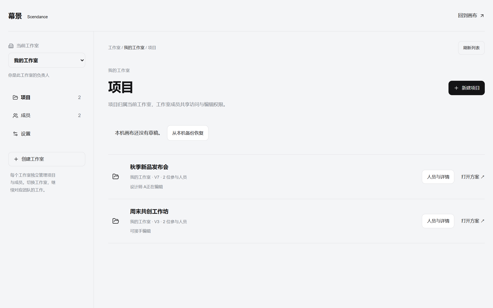
/projects/ 管理页 · 项目 列表 / 成员 / 设置 · 最近动过的排最前
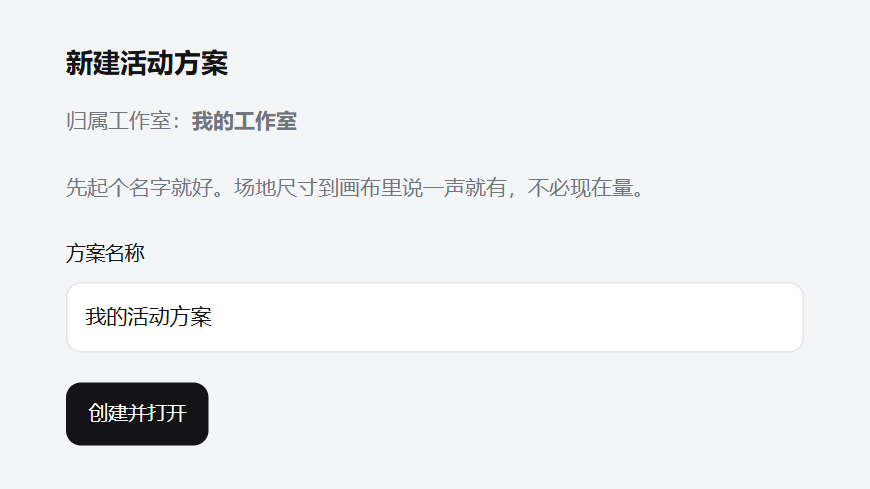
/projects/ 新建表单 只起名字，不必现在量房 · 尺寸留给对话①
回环：顶栏「项目 」随时回管理页；管理页「回到画布 ↗ 」回工作台。项目列表按最近动过的排最前，列表上方一条本机草稿横幅：继续上次活动 · 从本机备份恢复 （F-05）。
S2
接需求 已对齐 · F-02 落地（左栏改动即时回显，钮降为次要）
主路
首屏 快捷生成条 品牌快闪…婚礼聚会 室内 12×9 120 人
生成方案 / 发送Agent 默认收起，这一步把它打开 右栏 晴光 Agent 对话 「说一句，比如『80 人发布会…』」
次路
左栏 活动资料 · 客户需求 01 目标与来宾体验 · 02 活动类型与规模 · 必需项 · 改过一项右栏即回显
回环：「放弃 」清空候选回画布；「暂不填写 · 先回画布 」收起左栏。
03 辅助 · 出场后核心做完之后的四步：发给客户、交给搭建方、跟队友分编辑权、把资料留在本机。它们不改变空间，只搬运结果。
S7
评审与客户交付（④） 已对齐 · 禁代发客户链 · 右栏 Agent 对话与记录在此模式可见
只读场景 + 物料清单 · 无编辑控件 旋转 / 缩放 / 视角
/view/ 客户只读页 你把链接发给客户
后续访问被拒绝
/view/ 链接失效态 删除项目同样生效
S8
执行交接（④） 已对齐 · 右栏 Agent 对话与记录在此模式可见
S9
协作与编辑权 已对齐 · F-04 落地
/projects/ 项目列表 「设计师 A 正在编辑 / 可接手编辑」
/editor/ 接手编辑 lease 续期；被接手后工作区提示「由别人编辑，改动只在本机」
去项目页接手编辑F-04 已落：先把本机图纸落盘再跳 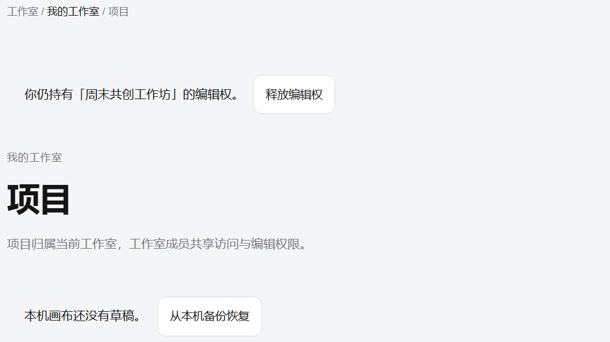
/projects/ 释放编辑权横幅 释放前先把本机图纸落盘
S10
备份与恢复 / 换机 已对齐 · F-05 落地
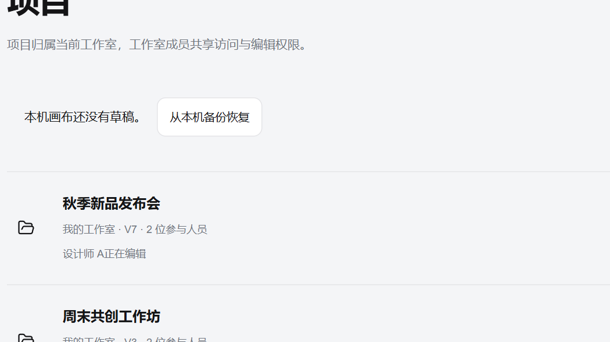
/projects/ 本机草稿横幅 换机冷启动没有草稿，也给出「从本机备份恢复」
从本机备份恢复F-05 已落：/editor/?restore=backup 校验 → 恢复 → 可撤销 场景+需求+图纸+点验完整回来
/editor/ 恢复成功 自动打开执行工作区的恢复面板 · 事务护栏原样
04 断点：三条已补，五条新露把链画出来之后，断点自己浮出来了。下面三条本批已补：
S1 · 新建表单逼用户先量房，把人从「对话聊出场地」的主路径上拽下来 → F-01 已落 S10 · 备份文件在手里，恢复却要先钻进工作台——冷启动用户在最需要它的页面找不到入口 → F-05 已落 S3/S9 · B 支路干完活没有「回对话」的桥；被抢权后没有「去接手」的桥——两条断头路 → F-03 / F-04 已落
把链按「核心 / 辅助」重排之后，又在本地实例上真走了一遍核心三条路，露出五条图与产品对不上 的地方。前四条在核心里，第五条在进场前：
S3 · A 支路 · 场地上报「室内 12×9，层高 4」，Agent 直接回「场地改成 12 × 9 m。」——没有预填卡、没有「确认生成 3D」，而且层高 4 被吞了 ，回复里一个字没提；预填卡只在空白场地那条路才出现 → 未修 S3 → S5 · 图上画的壳体是「地面＋墙＋主入口＋层高」四件，实测壳体没有主入口 ：优化体检直接回「这张场地没有可识别的入口或门，入口通道我不猜」 → 未修 S4 · 108 ㎡ 剧院式只摆得下 16 座 ，其余 64 位按站立留空，右栏挂着「座位 16 / 80 · 还差 64」——密度算法偏保守，第一眼像产品不行 → 未修 S5 · 体检给出一条改法，点「按这条改：把靠边的桌椅往场中挪」之后，右栏没有长出「确认布置」 ，还是「换一版 / 我来调 / 走一遍给客户看」——图上这一跳是断的 → 待复测 S2 · Agent 面板默认收起，正线第一步少画一跳「点头像打开晴光」 → 图上已补
这一轮实测撞在另一会话写一半的代码上（地图入口那批改动，13:44–13:50 连续落盘），画布整块空白、Agent 栏撑宽盖住画布，所以核心三条链的实拍还没补 ；等那批改动落定一次性拍。
05 差距卡表（五张全部落地）
卡 流程 in out 验收（各 3） F-01 S1 /projects/ 新建免尺寸、只留名称；最近活动置顶 不动对话①；不动壳体契约 新建后对话可聊出场地；旧路径不回归 F-02 S2 活动需求表回显联动与文案 不删次要入口；不改右栏主路径 左栏改动右栏可见；主入口唯一 F-03 S3 图纸支路完成后的「回对话继续布置」引导 不改重建流程；不代确认墙 应用候选后出引导；点击聚焦右栏对话 F-04 S9 被抢权提示加去向链接 不改 lease 机制 被抢权→一键到项目页 F-05 S10 /projects/ 加「从本机备份恢复」入口 不动恢复事务逻辑（V3/V4/撤销恢复） 项目页恢复含图纸备份成功；失败回滚原样
落地顺序：F-01 → F-05 → F-03 → F-04 → F-02 ，一次只开一张卡；F-02 的回显按「改过一项才算她填的」判定，未保存的表单默认值仍不冒充简报。核对「Agent 贯穿」时发现评审/执行模式只留着输入框、对话记录却不显示——已把记录改成三种模式共用。验证：typecheck 干净；全量 3835／3837 项用例通过，余下 2 项是本批之前就存在的旧断言与样例漂移，与本次改动无关。分支开发，合入只由人。
实拍来自你正在使用的本地实例（3000 端口 · 进行中状态，playwright + Chrome 1440×900 @1.5x）· 管理页四张与 Aholo 一张同取自这个 3000 实例，其业务接口走仓库自带的本地 mock 后端（mock-server.cjs:3099），项目与成员名是示例数据 · 截图存 docs/visual-2026/shots3000/ 与 shots/ · 虚线框控件名与 frontend 实现一字不差 · 点任意截图可看大图 · 幕景 SCENDANCE © 2026